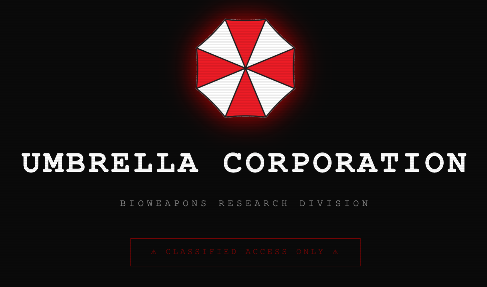

Sites I designed and coded end to end — from layout to live build. Same eye as the photography, carried onto the screen.

A fan-built Umbrella Corp. terminal, designed and coded from scratch — dark bioweapons-division UI with a full Resident Evil lore treatment. Hidden behind the classified-access panel is a secret page: a playable easter-egg recreation of the Ark lab from the newer RE titles, tucked away for anyone who digs deep enough.